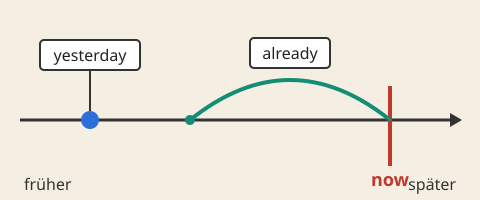

Punkt oder Bogen? present perfect oder simple past
Mit einem KI-Tutor lernen
Ein KI-Tutor erklärt dir diese Seite und hilft dir bei den Aufgaben. Wähl deinen Assistenten:
Mit Claude öffnen Mit ChatGPT öffnen Mit Mistral Vibe öffnen
Du nutzt dein eigenes Konto beim Anbieter. Der Assistent ist kein Angebot von lernapps.net: lernapps liefert nur Inhalte und Aufgaben. Die Wahl gilt für alle Seiten, nur auf diesem Gerät.
Punkt und Bogen
Aufgabe
Lösung
Der Punkt. richtige Antwort
Yesterday nennt einen Zeitpunkt in der Vergangenheit. Dafür steht der Punkt, also das simple past.
Der Bogen.
Der Bogen reicht bis now und hat keine Zeitangabe wie yesterday.
Die Welle.
Die Welle zeigt, dass etwas im Gang ist. Bei yesterday ist ein einzelner Zeitpunkt gemeint.
Yesterday ist eine Zeitangabe in der Vergangenheit. Dazu passt der Punkt.
Das kannst du danach: Du entscheidest, ob du das simple past oder das present perfect brauchst, und begründest deine Wahl mit dem Zeitstrahl.
Ein Zeitungsartikel
| Englisch | Deutsch |
|---|---|
| library | Bibliothek |
| shelf, shelves | Regal |
| borrow | ausleihen |
| comfortable | bequem |
| join | beitreten, mitmachen |
| reading corner | Leseecke |
| success | Erfolg |
| clap | klatschen |
| quiet | ruhig |
| club | Klub, AG |
The new library is a big success
[1] Last Monday, the new school library opened. Mr Hill welcomed the students, and the whole school clapped.
[2] The library has changed a lot. The old shelves are gone, and there are now comfortable chairs and a quiet reading corner. A group of students painted the walls in summer.
[3] "It's wonderful," says Ellie, 13. "I have already read three books, and I borrowed the first one on Monday."
[4] Amir has joined the reading club, but he hasn't chosen a book yet. Peter has never liked reading before, but yesterday he found a story he loves.
[5] Have you visited the library yet? The doors are open every day after school. Come and see it!
Zeitpunkt oder Ergebnis?
Beide Zeiten sprechen über die Vergangenheit, aber sie zeigen etwas anderes. Das simple past ist ein Punkt mit einer genauen Zeitangabe. Das present perfect ist ein Bogen bis now. Hier zählt, was jetzt noch da ist, die Zeit ist nicht genannt.

© CC-BY-4.0Der Punkt hat eine Zeitangabe. Der Bogen reicht bis now, sein Fähnchen nennt kein Datum.
| Zeichen | Zeit | Signalwörter |
|---|---|---|
| Punkt | simple past | yesterday, last week, in May, ago |
| Bogen | present perfect | already, yet, just, ever, never |
Merke
Steht eine Zeitangabe der Vergangenheit im Satz (yesterday, last year, three days ago), brauchst du das simple past. Zählt das Ergebnis für jetzt und ist keine Zeit genannt, brauchst du das present perfect mit have oder has. Mit yesterday und ago steht nie das present perfect.
Übung
Aufgabe
Lösung
Eine Geschichte, die er liebt. richtige Antwort
Das steht in Zeile 4, mit yesterday.
Seinen ersten Bibliotheksausweis.
Von einem Ausweis steht im Artikel nichts.
Ein Buch, das Ellie ausgeliehen hat.
Ellie hat ihr Buch am Montag ausgeliehen, das steht in Zeile 3.
Peter hat gestern eine Geschichte gefunden, die er liebt.
Aufgabe
Lösung
Zeile 2 richtige Antwort
In Zeile 2 steht The library has changed. Das Ergebnis zählt jetzt, es gibt keine Zeitangabe.
Zeile 4 richtige Antwort
In Zeile 4 stehen has joined, hasn't chosen und has never liked.
Zeile 5 richtige Antwort
In Zeile 5 steht Have you visited the library yet? Das ist eine Frage nach dem Ergebnis.
Zeile 3 richtige Antwort
In Zeile 3 steht I have already read three books. Das Ergebnis zählt jetzt, I borrowed the first one on Monday ist dagegen simple past.
Zeile 1
In Zeile 1 stehen opened, welcomed und clapped, dazu last Monday. Das ist nur simple past.
Das present perfect steht ohne genaue Zeitangabe, wenn das Ergebnis jetzt zählt.
Aufgabe
Wähle die richtige Zeit. Im britischen Englisch ist hier genau eine Zeit üblich.
Tipp
Steht eine Zeitangabe wie yesterday oder ago im Satz, brauchst du das simple past. Sonst zählt das Ergebnis.
- Gestern habe ich ein Poster gemalt. → Yesterday I … a poster.
- Wir haben unsere Hausaufgaben schon gemacht. → We … our homework already.
- Er hat vor zwei Tagen sein Buch zurückgegeben. → He … his book two days ago.
- Sie hat noch nie Sushi gegessen. → She … sushi.
Lösung
- Yesterday I painted a poster.
- We have done our homework already.
- He returned his book two days ago.
- She has never eaten sushi.
Aufgabe
Lösung
Der Schlüssel fehlt jetzt noch, das Ergebnis zählt. richtige Antwort
Das ist der Bogen bis now. Der Sprecher hat den Schlüssel jetzt nicht.
Der Schlüssel ging gestern verloren.
Von gestern steht im Satz nichts. Mit yesterday würde das simple past stehen.
Es war ein Ereignis, das nicht mehr wichtig ist.
Das present perfect zeigt, dass das Ergebnis noch wichtig ist.
Mit dem present perfect sagst du, dass das Ergebnis jetzt zählt. Eine Zeitangabe steht nicht im Satz.
Aufgabe
Schreibe den ganzen Satz in der richtigen Zeit.
Tipp
Zeitangabe der Vergangenheit, dann simple past. Ergebnis jetzt, dann present perfect.
- I · see · that film · last week
- Amir · lose · his key · yesterday
- Ellie · just · finish · her book
- they · never · visit · London (bis jetzt)
Lösung
- I saw that film last week.
- Amir lost his key yesterday.
- Ellie has just finished her book.
- They have never visited London.
Aufgabe
In jedem Satz steckt ein Fehler. Schreibe den Satz richtig.
Tipp
Prüfe, ob eine Zeitangabe der Vergangenheit im Satz steht.
- I have seen him yesterday.
- We have visited the museum last week.
Lösung
- I saw him yesterday.
- We visited the museum last week.
Aufgabe
Hör zu und schreibe, was du hörst.
- KI
- KI
- KI
Lösung
- She has already sent the letter.
- They watched the match on Saturday.
- Have you tried the new cake yet?
Selbst sprechen und schreiben
Aufgabe
Hör zu, sprich nach und nimm dich auf. Vergleiche dann mit dem Original.
Tipp
Hör den Satz zuerst. Sprich langsam nach und achte auf have, has und die Zeitangaben.
- My uncle has bought a new car.KI
- We went to the beach two days ago.KI
- I haven't finished my homework yet.KI
Zum Aufnehmen braucht diese Aufgabe JavaScript. Die Beispiele kannst du auch ohne anhören.
Lösung
- My uncle has bought a new car.
- We went to the beach two days ago.
- I haven't finished my homework yet.
Offene Aufgabe
Schreibe für die Schülerzeitung drei bis vier Sätze über etwas Neues in deiner Schule oder Stadt. Benutze mindestens einen Satz mit dem simple past und einer Zeitangabe und einen Satz mit dem present perfect. Du kannst so beginnen: Last week, … The new … has already …
Eine gute Antwort enthält:
Lösung
Last week, our school opened a new gym. The students have already used it three times. The teachers have bought new balls, and we played a match there yesterday.
Wie es weitergeht
Am Wandbild liegen jetzt Punkte und Bögen nebeneinander. Im nächsten Kapitel wächst der Bogen, wenn etwas bis jetzt andauert, und du lernst since und for.
Fehler gefunden oder eine Idee für diese App?